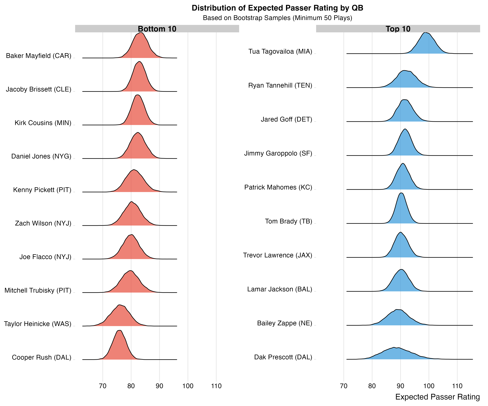

Expected Passer Rating in the NFL: Contextualizing QB Performance Using Tracking Data
Introduction
Football analytics has come a long way since the days of simply counting yards and touchdowns. With the advent of tracking data, we now have the ability to analyze the game at a granular level never before possible. This project focuses on one of the most watched and analyzed positions in sports: the NFL quarterback.
In this notebook, we explore a new metric: Expected Passer Rating (EPR) - a measurement that contextualizes quarterback performance by using tracking data to determine how difficult each throw actually was, rather than just looking at the outcome.
What is Passer Rating?
Passer rating has been the standard quarterback efficiency metric in the NFL since it was developed in 1970 by Seymour Siwoff. This formula uses four primary statistics to quantify a quarterback’s performance:
Completion Percentage, Yards per Attempt, Touchdown Percentage, and Interception Percentage. All of these components are bounded between 0 and 2.375.
The formula can be expressed as:
\[ \text{Passer Rating} = \frac{\left(\left(\frac{COMP}{ATT} - 0.3\right) \times 5 + \left(\frac{YARDS}{ATT} - 3\right) \times 0.25 + \left(\frac{TD}{ATT}\right) \times 20 + 2.375 - \left(\frac{INT}{ATT} \times 25\right)\right)}{6} \times 100 \]
While passer rating has been a useful metric for decades, it has inherent limitations that our Expected Passer Rating model aims to address.
Motivation: Why We Need a Better Metric
Traditional passer rating has served football analysis for over 50 years, but it contains several fundamental flaws. It counts the entire outcome of a play, including what happens after the pass is thrown such as yards after catch. It’s also unstable and noisy from game-to-game and season-to-season, making it difficult to rely on for consistent evaluation. Furthermore, it doesn’t account for the difficulty of throws, treating all completions, touchdowns, and interceptions as equal regardless of context. A 5-yard dump-off to a running back who breaks three tackles for a touchdown counts the same as a perfectly placed 40-yard strike into tight coverage in the end zone.
By using conditional expectation, we can provide a better measure of quarterback performance that accounts for the difficulty of each throw situation. Tracking data allows us to quantify quarterback and receiver effects separately.
Let’s look at a concrete example to illustrate this problem:
Not All 10-Yard Completions Are Created Equal
Consider these two plays, both 10-yard completions resulting in identical passer ratings of 108.3:
Play 1: Matthew Stafford makes a routine 10-yard throw from a clean pocket to Cooper Kupp.
Play 2: Marcus Mariota makes a 10-yard throw while off-balance and under pressure to Olamide Zaccheaus.
Traditional passer rating treats these plays identically (both are 108.3), but the second throw objectively required more skill and was completed under more difficult circumstances. Our model aims to account for these differences. These video examples represent part of our extensive exploratory data analysis, where we examined thousands of plays to understand the contextual factors that affect pass outcomes beyond what traditional statistics capture.
Using Tracking Data to Solve This Problem
To build our Expected Passer Rating model, we leveraged the rich tracking data from the NFL’s Next Gen Stats (NGS) combined with play-by-play data and PFF analysis. Our features fall into several categories:
Data Sources
- NFL NGS tracking data from the Big Data Bowl 2025
- PFF analysis and grading
Feature Categories
Our model incorporates a rich variety of feature categories that capture the complexity of each throw situation. Game Context features include half, seconds left, score difference, expected points, and down and distance information such as down, yards to go, and field position. We track QB Metrics through dropback characteristics like distance and type, time metrics including time to throw, time in tackle box, and time to pressure, as well as quarterback tracking data covering position, speed, direction, and orientation.
Pass Details comprise pass characteristics such as length, play action, and RPO usage, along with target information including coordinates, hang time, velocity, and angle. For Player Positioning, we analyze player counts by position (D-line, linebackers, defensive backs, etc.), formation data containing offensive formation and receiver alignment, motion indicators, and player tracking coordinates for various positions.
Defensive Elements feature pass pressure indicators like QB hits, pressures, and unblocked pressure, coverage schemes including man/zone coverage types, and defensive team indicators. Finally, Personnel Factors account for players in various zones (in box at snap, in box at throw), pass rusher and route runner counts, and player positioning downfield.
Modeling Approach
After evaluating several machine learning models, we decided on a structural approach that mirrors the football decision process:
Our model follows this structure:
1. A multinomial classification model predicts the probability of completion, incompletion, or interception
2. For completions, a regression model estimates expected yards after catch
3. From these predictions, we calculate the expected components of passer rating: completion percentage, yards per attempt, touchdown percentage, and interception percentage
4. These components are combined using the passer rating formula to generate Expected Passer Rating
Our modeling strategy leverages the conditional structure of passing plays, creating separate models that mirror how outcomes unfold on the field. Rather than trying to predict passer rating directly, we break down the process into its fundamental components. Since yards depend on both air yards and yards after catch (YAC), and the target location and line of scrimmage determine air yards, we focus on modeling YAC conditional on a completed pass. Similarly, since touchdowns are determined by total yards (air yards + YAC) and distance to the end zone, we avoid building a separate TD model, instead using the empirical cumulative distribution function of YAC residuals.
This lets us determine the probability that a given prediction’s residual will be large enough to result in a touchdown. For our model training, we used cross entropy to train the outcome model (completion/incompletion/interception) due to the high skewness in the data, while employing mean absolute error for the YAC model. Our 10-fold cross-validation process allows us to generate out-of-sample predictions for every pass, helping us evaluate quarterback performance under varying conditions.
Model Selection Process
We trained multiple model types using 10-fold cross-validation: - XGBoost (tuned) - Multilayer Perceptron Neural Network - Multinomial Logistic Regression with Interactions + Lasso - Random Forest - Naive Model - Simple Multinomial Logistic Regression
The XGBoost model provided the best balance of performance and interpretability, with a validation loss of approximately 0.58 after just 10 minutes of training and tuning. The multinomial logistic regression with interactions offered competitive performance with a validation loss of around 0.6, however, it took 4 hours to train.
Case Study: A Tale of Two Throws
Let’s revisit our example of the two 10-yard completions:
Stafford’s Clean Pocket Throw
| Metric | Expected | Actual |
|---|---|---|
| YPA | 9.3 | 10.0 |
| CMP% | 75.4 | 100.0 |
| INT% | 1.7 | 0.0 |
| TD% | 0.2 | 0.0 |
| PasserRating | 97.5 | 108.3 |
For Stafford’s routine throw from a clean pocket, our model predicted: - A 75.4% chance of completion (it was completed) - Expected 9.3 yards per attempt (actual: 10) - Low interception probability of 1.7% (actual: 0%) - Low touchdown probability of 0.2% (actual: 0%) - Resulting in an Expected Passer Rating of 97.5 (actual: 108.3)
This indicates the throw was slightly better than expected, but generally in line with what our model would predict for this situation.
Mariota’s Pressured Throw
| Metric | Expected | Actual |
|---|---|---|
| YPA | 4.2 | 10.0 |
| CMP% | 40.0 | 100.0 |
| INT% | 2.0 | 0.0 |
| TD% | 0.0 | 0.0 |
| PasserRating | 44.8 | 108.3 |
For Mariota’s difficult throw under pressure: - Only a 40% chance of completion (yet it was completed) - Expected just 4.2 yards per attempt (actual: 10) - Higher interception risk of 2.0% (actual: 0%) - Negligible touchdown probability (actual: 0%) - Resulting in an Expected Passer Rating of only 44.8 (actual: 108.3)
This demonstrates that Mariota’s throw was significantly more impressive than Stafford’s, as he completed a pass that had less than half the expected completion probability and generated more than twice the expected value.
Quarterback Rankings by Expected Passer Rating
Using our model, we analyzed quarterback performance for Weeks 1-9 of the 2022 NFL season (minimum 50 snaps, excluding tipped passes):
Distribution of Expected Passer Rating by QB
The distribution of expected passer rating by quarterback reveals interesting patterns about playing style and situation:

Looking at the distributions, we can see that:
- Top quarterbacks like Tua Tagovailoa, Ryan Tannehill, and Patrick Mahomes consistently attempt higher-value throws
- Bottom quarterbacks like Cooper Rush and Taylor Heinicke attempt lower-value throws on average
- Some quarterbacks show wider distributions than others, indicating more variability in throw difficulty
These distributions help us understand not just how quarterbacks perform, but the contexts in which they’re asked to perform. To quantify uncertainty in these distributions, we employed a bootstrapping approach with 1,000 samples per quarterback, which allowed us to generate the confidence bands visible in these ridge plots and ensure our rankings are statistically robust.
Key Findings
Our analysis revealed several important insights about quarterback evaluation. Context matters enormously in quarterback assessment. Traditional passer rating treats all completions, yards, touchdowns, and interceptions equally, but our model shows that the difficulty of throws varies dramatically based on game situation, pressure, coverage, and other factors.
Expected Passer Rating helps separate quarterback skill from results that may be influenced by receiver performance, defensive plays, or simple luck. This provides a clearer picture of quarterback contribution versus team effects. We also discovered interesting patterns of consistency versus volatility, with some quarterbacks consistently attempting difficult throws, while others operate in offenses designed for easier completions.
The EPR model provides valuable insight into coaching impact by revealing how offensive schemes put quarterbacks in more or less advantageous situations. This can help evaluate both quarterback and coaching effectiveness. Perhaps most interestingly, our analysis uncovered hidden value in certain quarterbacks who consistently outperform their expected ratings, indicating exceptional skill that traditional metrics fail to capture. These quarterbacks demonstrate abilities to complete passes in situations where most would fail.
Model Feature Importance
Our model revealed several key factors that most influence pass outcomes. When examining the Outcome Model (Completion/Incompletion/Interception), we found time to throw had the greatest impact on pass success probability. This makes intuitive sense, as quarterbacks with more time can find open receivers and throw with better mechanics. Pressure indicators followed closely in importance, with defensive players downfield, QB hit indicators, and pass coverage type also proving highly predictive of pass outcome.
For the YAC Model (Yards After Catch), pass length emerged as the dominant feature, greatly influencing how many yards could be gained after reception. Throw velocity played a significant role as well, as faster throws reach receivers more quickly, giving them additional time to assess and evade defenders. Target location, the number of offensive players downfield to provide blocking, and field position rounded out the most impactful features for predicting yards after catch. These findings align with football intuition while providing empirical validation of which factors truly drive pass play outcomes.
Limitations and Future Work
While our Expected Passer Rating model provides valuable insights into quarterback performance, it’s important to acknowledge its limitations and outline areas for future improvement.
Current Limitations
Sample Size Constraints: Our analysis covered only the first 9 weeks of the 2022 NFL season. This limited timeframe means some quarterbacks had relatively few pass attempts, increasing the uncertainty in their EPR estimates. Quarterbacks with fewer than 50 attempts were excluded entirely, potentially missing insights on backup quarterbacks or those who saw limited action.
Contextual Blindspots: While our model incorporates a rich array of tracking data, certain contextual factors remain challenging to quantify. For example, the model doesn’t account for: - The quality of the opposing defense beyond what’s captured in the immediate play context - Weather conditions that might affect passing (wind, rain, snow) - Game script factors like whether a team is playing aggressively or conservatively
Receiver Separation Quality: Our current model uses the positions of receivers and defenders at the time of the throw, but doesn’t directly measure the quality of route running or the degree of separation achieved by receivers. This might lead to undervaluing quarterbacks who consistently throw to well-covered receivers.
Play Call Constraints: The model doesn’t account for play call constraints or the available options on a given play. A quarterback might make the optimal choice among poor options, which our model doesn’t fully capture.
Conclusion
Expected Passer Rating provides a more nuanced and contextual measurement of quarterback performance than traditional passer rating. By accounting for the difficulty of each throw situation, we can better evaluate quarterback skill separate from factors outside their control. This creates a more equitable system for comparing quarterbacks across different teams, schemes, and situations.
As tracking data becomes increasingly available and sophisticated, metrics like Expected Passer Rating will continue to evolve. The future promises even more accurate and valuable insights into quarterback play, changing how we evaluate the most scrutinized position in sports. Looking forward, a promising direction for future work would be implementing a graph neural network (GNN) architecture where players are treated as nodes in a dynamic graph. This approach would more comprehensively incorporate the relationships between all 22 players on the field, capturing defensive schemes and receiver route combinations that our current model simplifies.
References
- NFL Next Gen Stats tracking data
- Pro Football Focus (PFF) analysis
- NFL play-by-play data
- Big Data Bowl 2025 dataset
Appendix
Features
Descriptions are sometimes taken from the Big Data Bowl 2025 data descriptions when applicable. Tracking features are described separately.
| Big Data Bowl 2025 - Main Features | |
|---|---|
| Feature | Definition |
| half | Game half (3 for overtime) |
| secondsLeftInHalf | Second left on game clock in half (in overtime if half=3) |
| posTeamIsHome | Home team is on offense (binary) |
| down | Down |
| yardsToGo | Distance needed for a first down |
| scoreDiff | Offense score minus defense score |
| absoluteYardlineNumber | Line of scrimmage yards from back of offensive endzone |
| expectedPoints | Expected points on this play |
| passLength | The distance beyond the LOS that the ball traveled not including yards into the endzone. If thrown behind LOS, the value is negative. |
| playAction | Whether there was play-action on the play (binary) |
| pff_runPassOption | Whether or not the play was a run-pass option (binary) |
| dropbackDistance | The distance the QB dropped back (yards) behind the center after the snap |
| timeToThrow | The time (secs) elapsed between snap and pass |
| timeInTackleBox | The amount of time the QB spent inside the tackle box |
| timeToPressure | The minimum time elapsed from snap to the first instance of any defensive player reaching a pressure probability greater than or equal to 0.75 |
| unblockedPressure | Whether there was pressure from an unblocked player (binary) |
| qbHit | Whether or not a player recorded a QB hit on this play (binary) |
| qbPressures | Number of defensive players pressuring the QB, defined as achieving a peak pressure probability greater than or equal to 0.75 over the course of a dropback |
| passRushers | Number of initial pass rushers on this play |
| inBoxAtSnap | Number of defensive players less than 5 yards downfield and less than 4 yards wide of the ball at time of snap |
| inBoxAtThrow | Number of defensive players less than 5 yards downfield and less than 4 yards wide of the ball at time of throw |
| dlineCount | Number of defensive players onfield on this play whose position was DE, DT, or NT |
| lbCount | Number of defensive players onfield on this play whose position was MLB, LB, ILB, or OLB |
| dbCount | Number of defensive players onfield on this play whose position was SS, FS, CB, or DB |
| rbCount | Number of offensive players onfield on this play whose position was RB or FB |
| wrCount | Number of offensive players onfield on this play whose position was WR |
| teCount | Number of offensive players onfield on this play whose position was TE |
| routeRunners | Number of offensive players running a route on this play |
| motionMen | Number of offensive players in motion after they were initially set at the line on this play |
| targetX | The x-coordinate of the targeted receiver when the pass arrived |
| targetY | The y-coordinate of the targeted receiver when the pass arrived |
| hangTime | Time in air of football between throw and arrival at target |
| throwVelo | Maximum speed of football between throw and arrival |
| throwAngle | Angle in degrees between qb throwing straight forward and pass trajectory |
| offPlayersDownfield | Number of offensive players downfield of target at time of throw and inside 135-degree cone oriented in direction of ball trajectory |
| defPlayersDownfield | Number of defensive players downfield of target at time of throw and inside 135-degree cone oriented in direction of ball trajectory |
| defensiveTeam | Team abbr of team on defense (text) |
| dropbackType | The type of drop back after the snap by the QB (text) |
| offenseFormation | Formation used by possession team (text) |
| receiverAlignment | Enumerated as 0x0, 1x0, 1x1, 2x0, 2x1, 2x2, 3x0, 3x1, 3x2 (text) |
| pff_passCoverage | The pass coverage concept employed by the defense on the play (text) |
| pff_manZone | Whether the defense employed man or zone coverage on the play (text) |
| Player Roles | |
|---|---|
| Role | Description |
| QB | Player attempting pass |
| WR | Target of pass or nearest receiver if there was no target |
| CB | Defender nearest to the WR at time of throw |
| SF | Defender nearest to target at time of throw who is oriented within 67.5 degrees of QB location |
| DL | Defender nearest to the trajectory of the pass at time of throw who is less than 3 yards downfield |
| BZ | Defender nearest to QB at time of throw who is oriented within 67.5 degrees of QB location |
| Tracking Features | |
|---|---|
| Feature | Description |
| x | Player position along the long axis of the field, 0 - 120 yards. |
| y | Player position along the short axis of the field, 0 - 53.3 yards. |
| s | Speed in yards/second |
| dir | Angle in degrees of player motion |
| o | Player orientation in degrees |